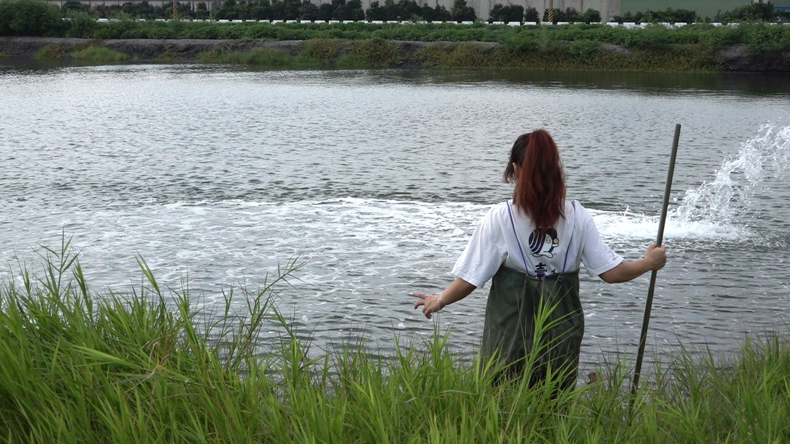
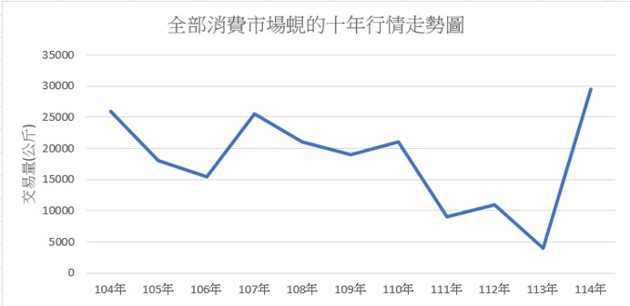

擁有全台面積最大的海岸濕地與潮間帶，彰化沿海的沙灘不僅孕育豐富的生態，也提供貝類天然繁衍的環境。加上沿海地區及魚塭多為砂質土壤，土質較為疏鬆、不易黏附，有利於貝類在土壤中進行呼吸與濾食，讓彰化成為台灣重要的貝類養殖地區。在這片土地上，一位承襲三代養殖經驗的青年，將大和黑蜆融入台灣飲食文化，成功開拓新的市場。
國人的印象改變 黑蜆在台灣闖出新世界
大和黑蜆原生於日本河口的半鹹水區域，冬季是肉質最為飽滿、厚實的時期，因富含營養價值且肉質鮮美，因此被譽為「海中黑鑽石」。然而，大和黑蜆在日本屬於瀕危物種，加上對養殖環境與技術的要求相當高，日本長期難以突破養殖技術的限制，在每年12月至隔年3月的期間還有休漁期。為突破養殖上的限制，2013年大和黑蜆正式引進台灣，業者透過天然海水搭配益生菌的養殖方式，建立適合黑蜆生長的環境，也讓大和黑蜆在台灣成功落地。
不過，大和黑蜆進入台灣市場後，由於台灣民眾對蜆類製品的認知度低，加上台灣消費者過去較習慣食用體型較大的貝類，使得體型相對嬌小的蜆類在市場上不受喜愛，大眾對蜆的印象也大多停留在養生品，其中台灣原生黃金蜆在民間也被視為良好的藥材，有開胃解酒和去熱等效果，因此大和黑蜆初期也主要依賴特定通路與外銷市場，內銷市場的開拓相對困難。
疫情期間，原本仰賴外銷與固定通路的銷售模式受到衝擊，訂單中斷也迫使業者重新思考黑蜆的銷售方式。隨著網路與數位行銷逐漸發展，業者開始透過網路推廣產品，並嘗試將黑蜆開發成不同形式的商品。位於彰化的壹顆蜆，主要養殖大和黑蜆。業者透過自產自銷、產品開發與品牌經營，將原本較為陌生的黑蜆轉化為多元的特色產品，逐漸突破傳統外銷市場的限制。
克服困難 將黑蜆帶入台灣市場
彰化漢寶村的壹顆蜆，目前由第三代楊渝涵經營。家族最初並非從事漁業，爺爺原本是農民，直到政府開放更多水產養殖用地後，才開始投入養殖產業。早期主要養殖鰻魚與草蝦，之後逐步轉向文蛤與黑蜆，隨著養殖技術與市場需求的變化，也走上不同於過去的產業道路。過去文蛤苗主要來自野生採集，數量相對有限，直到水產試驗所成功復育文蛤苗，讓苗種供應逐漸穩定並能夠量化生產，西部沿海漁民也因此有更多機會轉型投入文蛤養殖。

除了養殖環境與氣候適應性之外，市場需求同樣是重要考量。即使貝類能夠順利養殖，若市場沒有需求，最終仍可能面臨產品銷售不出去的問題。
壹顆蜆最後選擇大和黑蜆的主要原因在於黑蜆相較於其他貝類，更能適應彰化沿海的環境與氣候條件，同時已有穩定的日本客戶與外銷市場，具備一定的銷售基礎，因此成為家族養殖轉型後的重要品項。
目前黑蜆的主要銷售市場仍以外銷為主，每批出口量約20公噸，內銷市場的銷售量約為外銷的十分之一。為了突破內銷市場的限制，壹顆蜆也積極開發新的銷售管道，除了供應餐廳、生技公司及相關通路，也自行開發黑蜆相關產品，透過產品創新與多元通路逐步拓展國內市場。

楊渝涵表示，近年來逐漸將商品轉向小包裝、超市與多元通路，並透過短影音行銷吸引消費者，再將網路流量導入品牌官網。她希望建立直接面對消費者的銷售模式，也將黑蜆加工製成黑蜆精。文蛤與黑蜆養殖過程中產生的廢棄貝殼，由於成分含有碳酸鈣，具備除臭及抑制發霉等特性，因此她們也將廢棄貝殼製作成擴香石，讓原本被視為廢棄物的貝殼轉化為新的產品，也呼應環境永續與資源循環的理念。
除了經營家族事業，她也在去年成立「返潮青年培力工作站」，主要以在地返鄉青年及其他返鄉品牌的青年為對象。她希望協助青年認識自身能力，找到適合自己的發展方向。此外，他們也舉辦摸蜆兼洗褲，讓民眾親自接觸養殖環境，認識黑蜆及相關養殖知識；同時走訪外縣市舉辦食農教育講座，讓更多人了解水產從生產、養殖到餐桌的過程，以及生產者背後的辛苦。
對於有意投入漁業的年輕人，楊渝涵認為，除了不怕累、不怕辛苦，也需要對土地抱有情感與長期投入的決心。從小在漁業家庭長大的她，早已習慣養殖工作的日常，也更能理解這份產業背後的辛勞。疫情過後，她與妹妹決定返鄉接手家族事業，在傳承三代的基礎上加入新世代的經營思維，透過品牌創新、市集與展覽等方式推廣產品，讓更多人看見家鄉的產業特色。